Now it is time to sharpen images instead of blurring them. However in order to sharpen the images we do in fact blurr them first. The process fo sharpening an image is quite simple
First you create a gaussian with an appropriate size and sigma value, for this task I varied it based on the images spatial resolution. Then you blurr your image and subtract the blurred part form
the original image. Then you add the difference the desired amount of times, which we call the alpha factor, to the original image based on how much you want to sharpen it. I did
Now I took a high quality picture of me and my family and blurred it to the resharpen the image and see the results.
As we can see in the above images, the original image is better looking than the sharpened ones after blurring. This is due to the fact that when we do the gaussian blurr
we average from pixels and therefor loose informaton which the original image included, this information can not be regained again, unless of course we would use some sort of Machine Learning tool.
2.2 Hybrid Images
In this part we were supposed to create hybrid images which is seen as two different images when looked at far away or up close. If you do not want to walk away from the computer to see the
far away image you can just squint your eyes. The theory behind creating these images is take two images and add them together. But jsut doing that will give a really messy result. Instead
we use our knowledge of frequencies to create these images. We take our 2 images and let one of them pass thorugh a highpass filter and the other one passs through a lowpass filter and then add them upp together.
However instead of fourier transforming and then removing low and high frequencies of the images, we instead blurred the image which created the low frequency iamge. For the high
frequency image we just subtracted its respective lowpass image to isolate the high frequencies from the image. Very simple, then by just adding them up we get our hybrid images. I did lttle extra twist here
and increased the weight of the high frequency image by some to really make it pop when looking at the image up close, I think gave more exciting results.

Derek: Low frequency Image.

Nutmeg: High frequency Image.
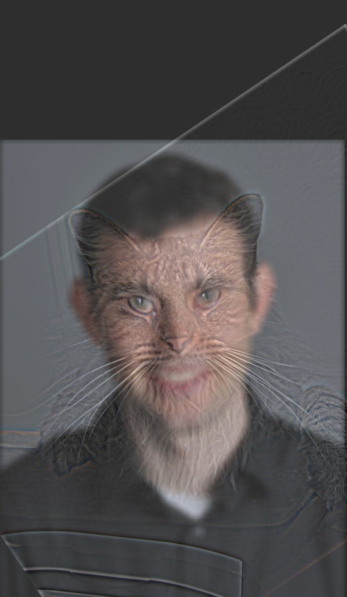
Catrek: Hybrid Image.
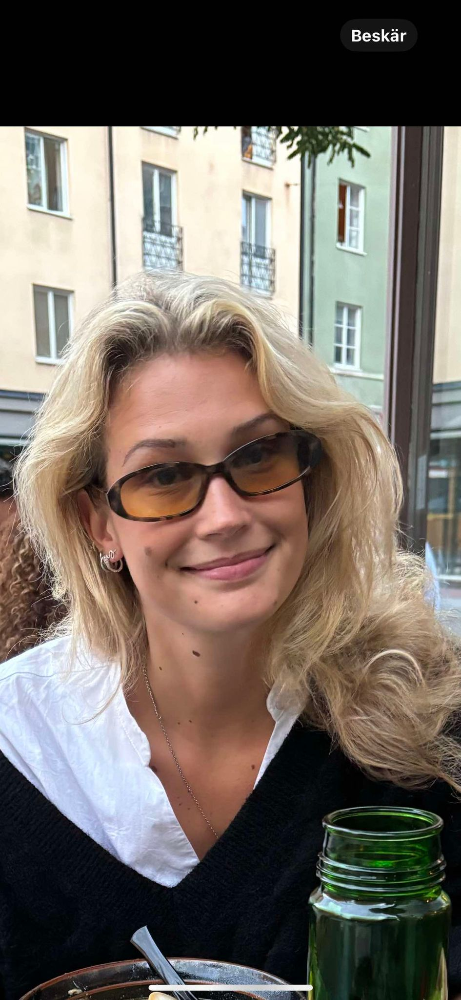
Rut: Low frequency Image.
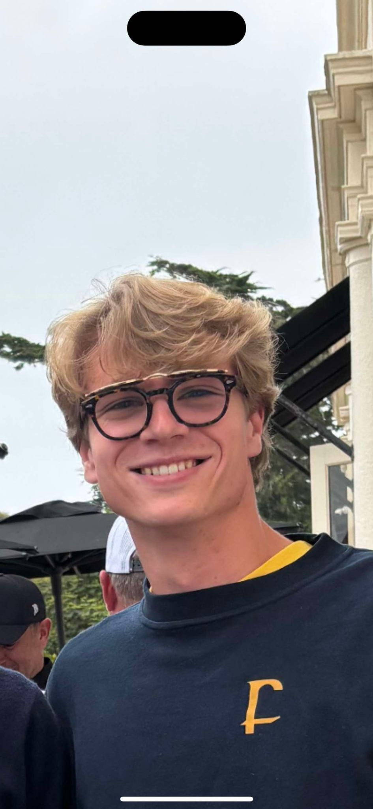
Kalle: High frequency Image.
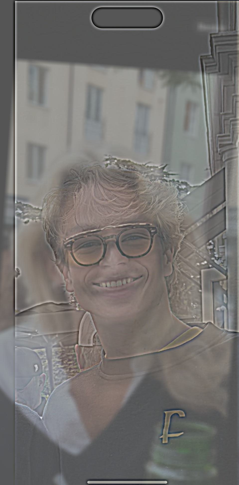
Kallrut: Hybrid Image both colorized.
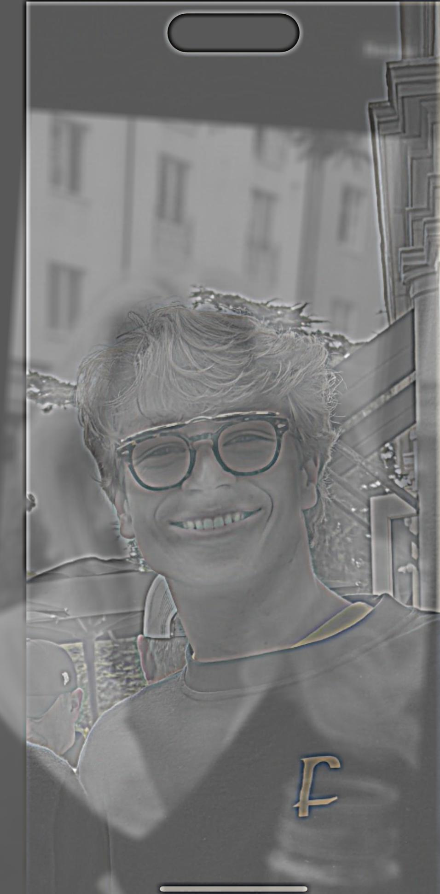
Kallrut: Hybrid Image LF grayscale and HF RGB
I tried different combinations for color settings when doing the hybrid images and came to the conclusion that gray and gray is not that great but works fine,
gray and color works as combination if you put the high frequency picture as colorized and the low frequency picture in grayscale otherwise the the contours in the high frequency image will
not be as clear. However I liked having both images in color since it made the hybrid images more vivid and fun to look at.
For my favorite merger, aka Kallrut I also did fourier analysis. For this I fouriertransformed the images and plotted the results in frequency domain. Below you will see the
fourier transfrom of me, rut, lowpass rut, highpass me and also the hybrid image after merging us.
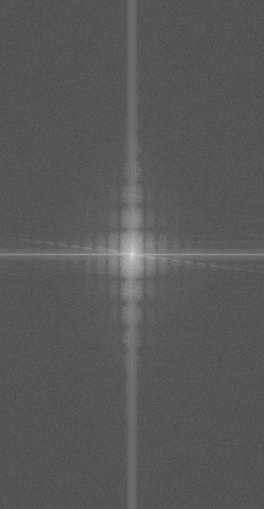
Rut Filtered (LF): FFT

Kalle Filtered (HF): FFT
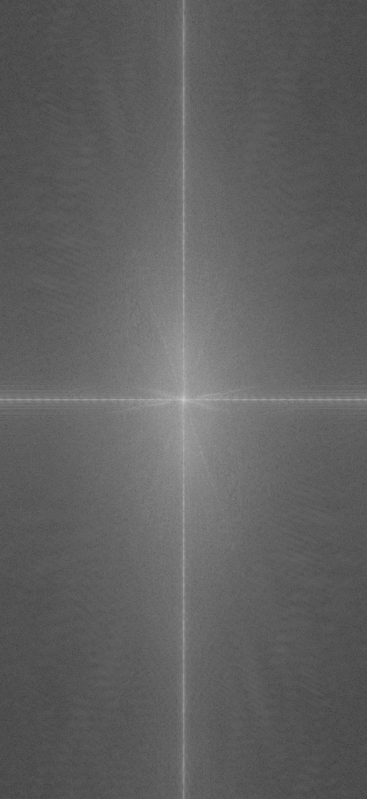
Kallrut Hybrid Image: FFT
2.3 Laplacian and Gaussian Pyramids
In this part of the project we were suppsoed to create a Laplacian and a Gaussian stack/pyramid. The Gaussian pyrmaid is quite simple to create, it is just constructing a pyramid
with the desired amount of levels were the first level is the original image, the second level is the gaussian blurring of the first image. Then the third level is the gaussian blurring of the second level. So what we do is just blurring the image more and more
with the last level being the most blurred, which is also the image with the lowest frequencies.
We then create the Laplacian pyramid using the Gaussian pyramid. This is done by just making the level of a Laplacian pyramid is equal to the the difference between the corresponding level and the next level in the Gaussian pyramid.
For the last level in the Laplacian pyramid we just set that to be the last level of the Gaussian pyramid. Now we have created a Laplcian pyramid with each level corresponds to a certain amount of frequenceis in the image.
I have 5 levels in my pyramids as displayed below. The first level is the highest frequencies since it is the original image minus the first blurr. Then the next three levels are like bandpass filters with decreasing frequencies. Then the last
image in the Laplacian pyramid is just the remaining low frequencies of the original image. In order to see if my implementation was correct I just collapsed the pyramid to see if it resulted in the
orginal image. As can be seen below the results illustrate what I just explained.
These pyramids can be used to blend images, when blending the apple and the orange I wanted to blend them vertically. In order to do this I masked the images using a vertical mask.
Then creating a gaussian pyramid of the vertical mask which I multiply with one of the gaussian pyramids for the images. For the second image I multiply the gaussian pyramid with (1- the gaussian
pyramid of the vertical mask). In order to get a smooth transition I made the mask to not just be a binary threshold at the middle of the image but a smooth transition from a short
range at the left of the image center to an equally short range to the right of the image. Letting the value decrease linearly from one to zero. The laplacian pyramids
of the halforange, halfapple and apporange are presented below.
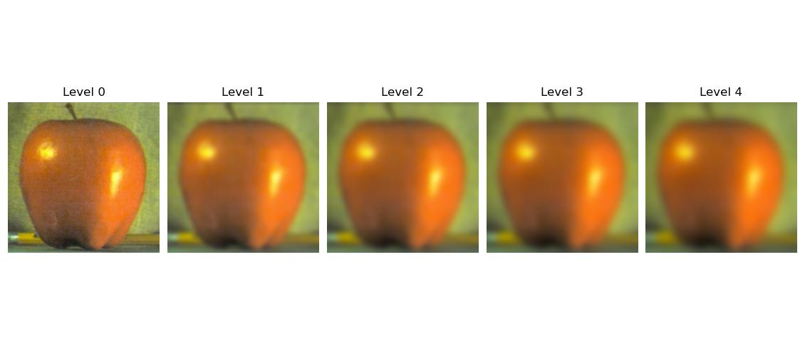
Gaussian Pyramid Apple.
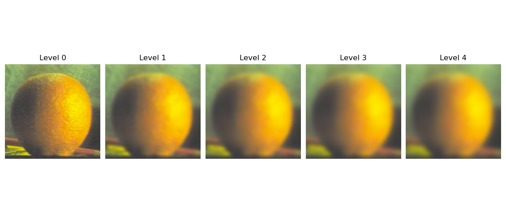
Gaussian Pyramid Orange

Laplacian Pyramid Apple
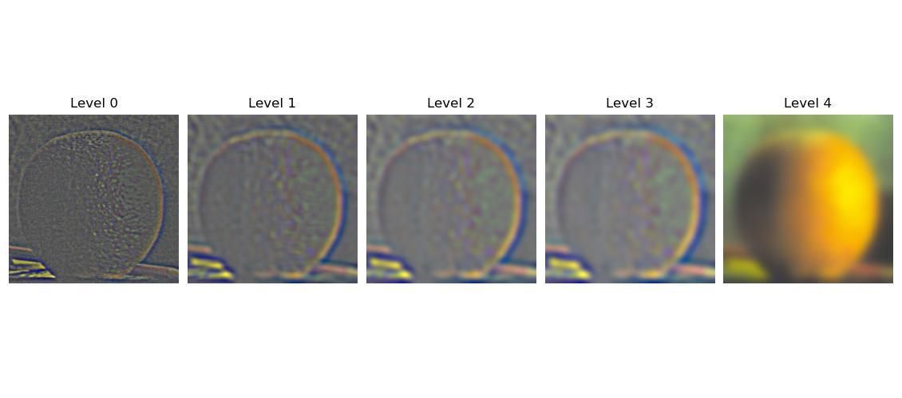
Laplacian Pyramid Orange
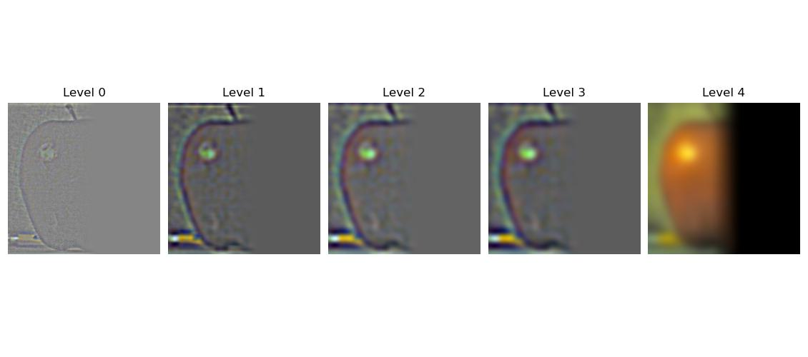
Laplacian Pyramid half apple
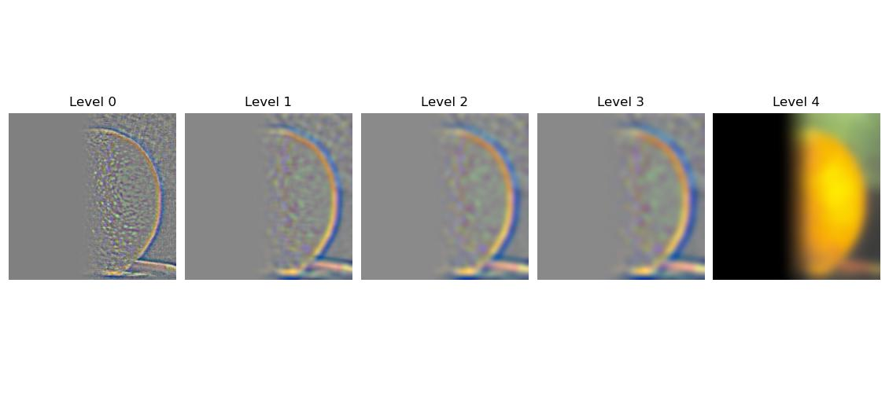
Laplacian Pyramid half organge
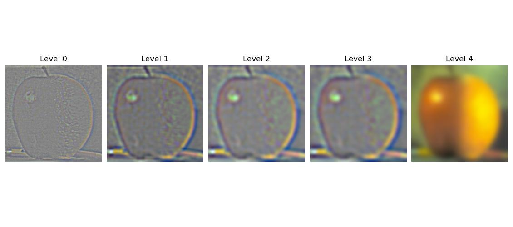
Laplacian Pyramid Apporange
2.4 Image Blending
In order to get the desired blended images which are desired I just add the masked pyramids together and then collapse the pyramid which will result in a blended image. Creating circular, box, vertical and horizontal masks is rather simple.
But creating irregular masks I found superhard by just using code, hence I used photoshop to create my irregular masks. The results I got are presented below.
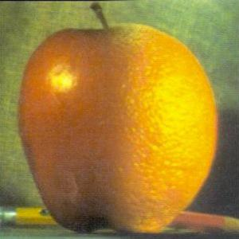
Apporange after blending apple and orange using Laplacian pyramids